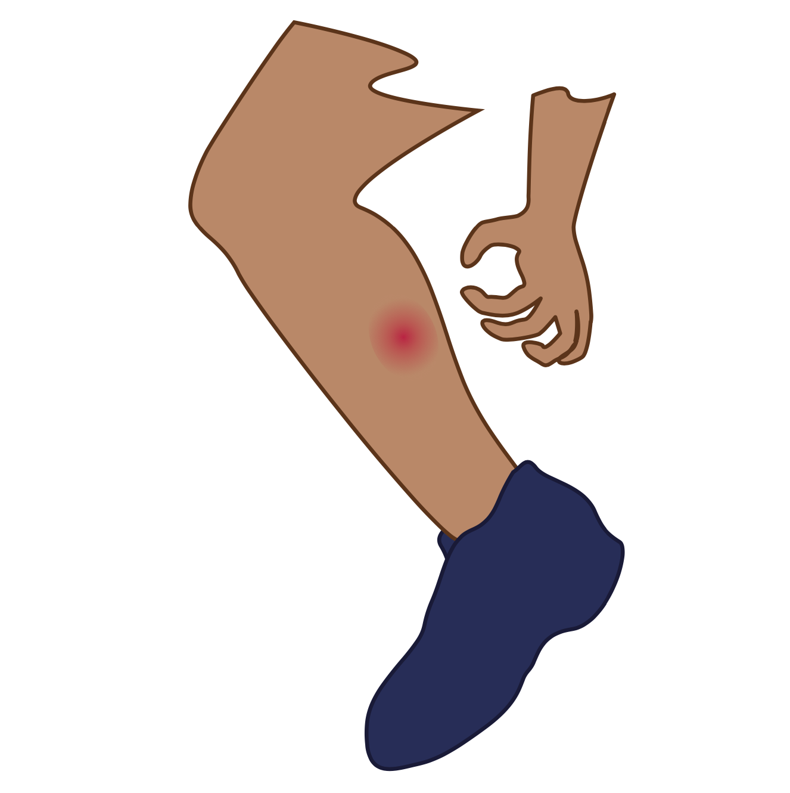
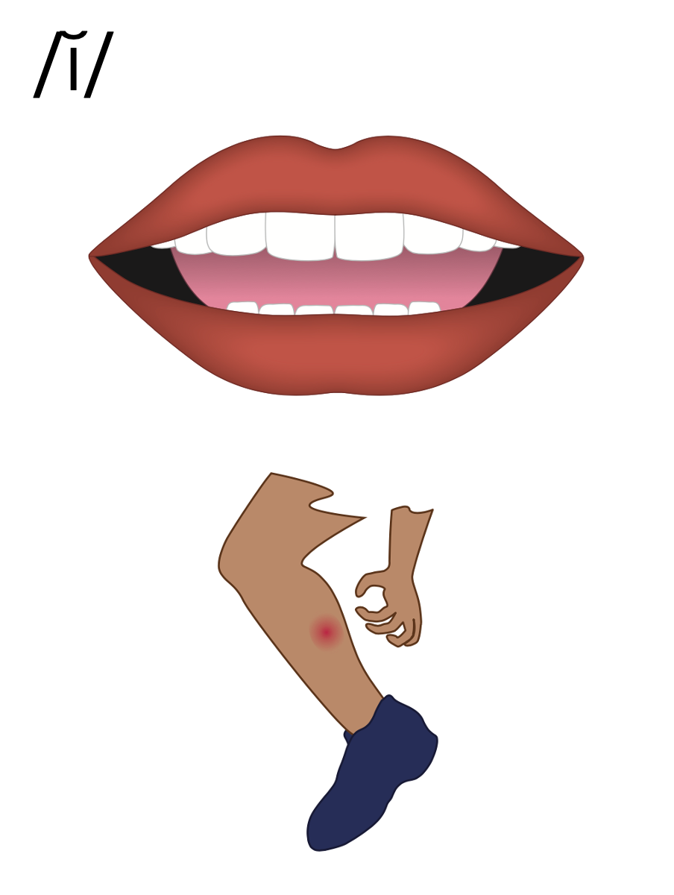
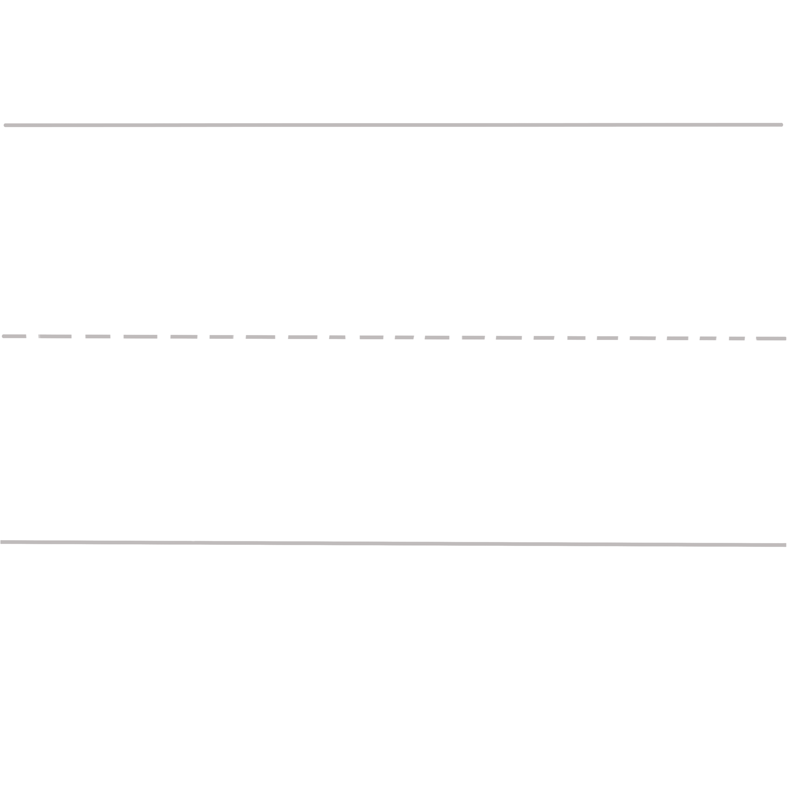
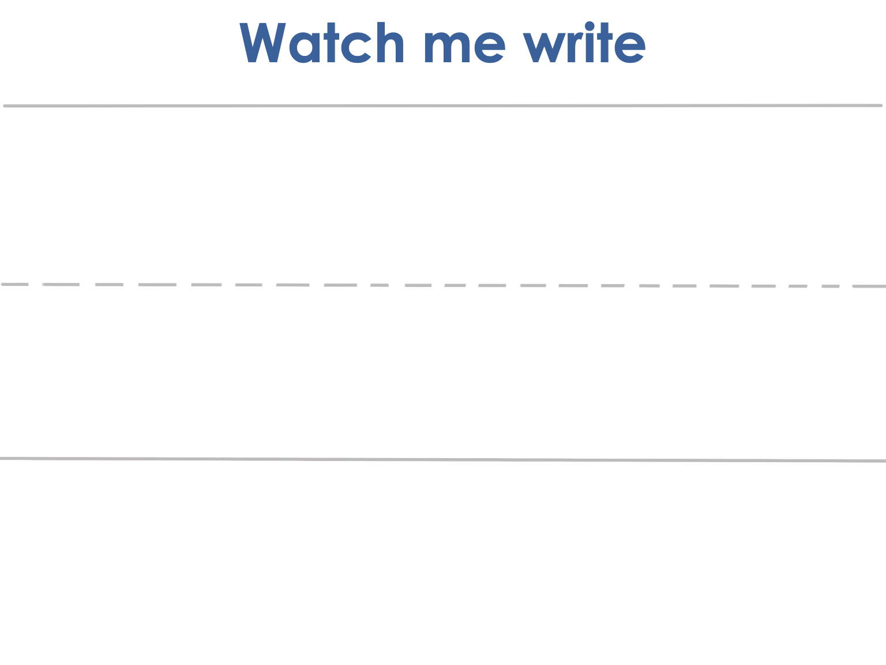
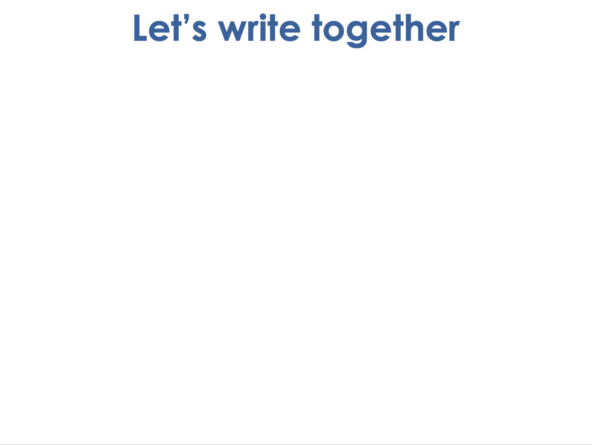
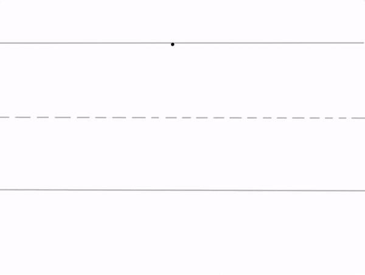
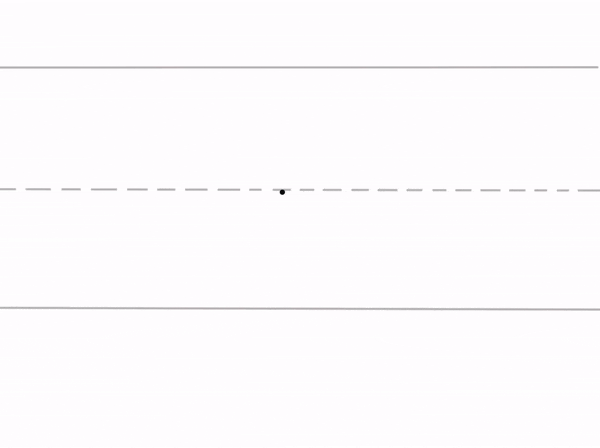

Lesson 8
i / ĭ/

ufliteracy.org


Lesson 8
i / ĭ/


See UFLI Foundations lesson plan Step 1 for phonemic awareness activity.


See UFLI Foundations lesson plan Step 2 for student phoneme responses.


f
p
t
s
m
a


See UFLI Foundations lesson plan Step 3 for auditory drill activity.

No slides needed for auditory drill.


See UFLI Foundations lesson plan Step 4 for blending drill word chain and grid.
Visit ufliteracy.org to access the Blending Board app.


See UFLI Foundations lesson plan Step 5 for recommended teacher language and activities to introduce the new concept.
i

beginning
middle
end
fit
dip
i
beginning
middle
end
in
if
i

i




Uppercase I gif

Lowercase i gif

it

if
sit
sip
fit
pit

See UFLI Foundations lesson plan Step 5 for words to spell.
Handwriting paper to model spelling.

See UFLI Foundations lesson plan Step 5 for words to spell.
Handwriting paper for guided spelling practice.


Insert brief reinforcement activity and/or transition to next part of reading block.

Lesson 8
i / ĭ/

New Concept Review

See UFLI Foundations lesson plan Step 5 for recommended teacher language and activities to review the new concept.
i
beginning
middle
end
fit
dip
i
beginning
middle
end
in
if
i
i
Lowercase i gif
it
if
sit


See UFLI Foundations lesson plan Step 6 for word work activity.
Visit ufliteracy.org to access the Word Work Mat apps.


See UFLI Foundations lesson plan Step 7 for irregular word activities.
The white rectangle under each word may be used in editing mode. Cover the heart and square icons then reveal them one at a time during instruction.

See UFLI Foundations manual for more information about reviewing irregular words.

the
Lessons 1-45
The digraph TH has not been introduced yet.
E represents the /ŭ/ or /ə/ sound depending on stress.
The white rectangle under the word may be used in editing mode. Cover the heart and square icons then reveal them one at a time during instruction.
I
Lessons 3-65
*Temporarily irregular
I /ī/ has not been introduced yet.
The white rectangle under the word may be used in editing mode. Cover the heart and square icons then reveal them one at a time during instruction.
and
Lessons 5-10
*Temporarily irregular
Nasalized A (an) has not been introduced yet.
N /n/ is not introduced until Lesson 9.
D /d/ is not introduced until Lesson 13.
The white rectangle under the word may be used in editing mode. Cover the heart and square icons then reveal them one at a time during instruction.
a
Lesson 7+
A as a word can be pronounced /ā/ or /ŭ/.
The white rectangle under the word may be used in editing mode. Cover the heart and square icons then reveal them one at a time during instruction.
Handwriting paper for irregular word spelling practice. Use as needed.
See UFLI Foundations manual for more information about reviewing irregular words.


See UFLI Foundations lesson plan Step 8 for connected text activities.
I sat at the tip.
Pat, Tim, and I fit.
See UFLI Foundations lesson plan Step 8 for sentences to write.

The UFLI Foundations decodable text is provided here. See UFLI Foundations decodable text guide for additional text options.
I Sit, I Tap
I sit.
I tap.
I sit and I tap.
I tap and I sit.
Pim and I sit.
Pim and I tap.

Insert brief reinforcement activity and/or transition to next part of reading block.